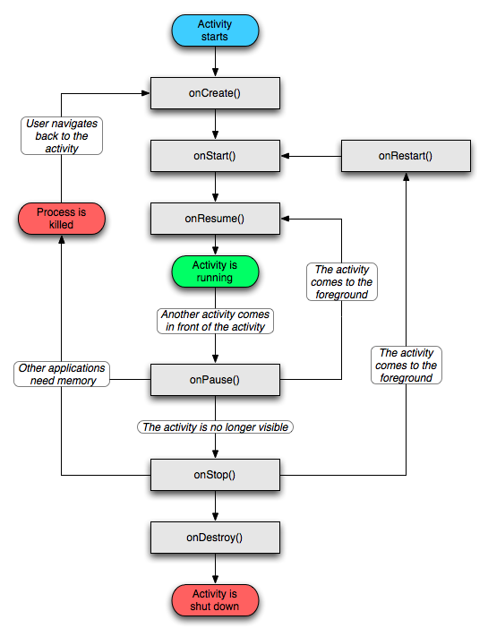

Android applications are written in the Java programming language.
The compiled Java code — along with any data and resource
files required by the application — is bundled by the
aapt
tool into an Android package, an archive file
marked by an .apk suffix. This file is the vehicle
for distributing the application and installing it on mobile devices;
it's the file users download to their devices. All the code in a
single .apk file is considered to be one application.
In many ways, each Android application lives in its own world:
It's possible to arrange for two applications to share the same user ID, in which case they will be able to see each other's files. To conserve system resources, applications with the same ID can also arrange to run in the same Linux process, sharing the same VM.
A central feature of Android is that one application can make use of elements of other applications (provided those applications permit it). For example, if your application needs to display a scrolling list of images and another application has developed a suitable scroller and made it available to others, you can call upon that scroller to do the work, rather than develop your own. Your application doesn't incorporate the code of the other application or link to it. Rather, it simply starts up that piece of the other application when the need arises.
For this to work, the system must be able to start an application process
when any part of it is needed, and instantiate the Java objects for that part.
Therefore, unlike applications on most other systems, Android applications don't
have a single entry point for everything in the application (no main()
function, for example). Rather, they have essential components that
the system can instantiate and run as needed. There are four types of components:
Activity base class.
An application might consist of just one activity or, like the text messaging application just mentioned, it may contain several. What the activities are, and how many there are depends, of course, on the application and its design. Typically, one of the activities is marked as the first one that should be presented to the user when the application is launched. Moving from one activity to another is accomplished by having the current activity start the next one.
Each activity is given a default window to draw in. Typically, the window fills the screen, but it might be smaller than the screen and float on top of other windows. An activity can also make use of additional windows — for example, a pop-up dialog that calls for a user response in the midst of the activity, or a window that presents users with vital information when they select a particular item on-screen.
The visual content of the window is provided by a hierarchy of views —
objects derived from the base View class. Each view
controls a particular rectangular space within the window. Parent views
contain and organize the layout of their children. Leaf views (those at the
bottom of the hierarchy) draw in the rectangles they control and respond to
user actions directed at that space. Thus, views are where the activity's
interaction with the user takes place. For example, a view might display
a small image and initiate an action when the user taps that image. Android
has a number of ready-made views that you can use — including buttons,
text fields, scroll bars, menu items, check boxes, and more.
A view hierarchy is placed within an activity's window by the
Activity.setContentView()
Service base class.
A prime example is a media player playing songs from a play list. The player application would probably have one or more activities that allow the user to choose songs and start playing them. However, the music playback itself would not be handled by an activity because users will expect the music to keep playing even after they leave the player and begin something different. To keep the music going, the media player activity could start a service to run in the background. The system would then keep the music playback service running even after the activity that started it leaves the screen.
It's possible to connect to (bind to) an ongoing service (and start the service if it's not already running). While connected, you can communicate with the service through an interface that the service exposes. For the music service, this interface might allow users to pause, rewind, stop, and restart the playback.
Like activities and the other components, services run in the main thread of the application process. So that they won't block other components or the user interface, they often spawn another thread for time-consuming tasks (like music playback). See Processes and Threads, later.
An application can have any number of broadcast receivers to respond to any
announcements it considers important. All receivers extend the BroadcastReceiver base class.
Broadcast receivers do not display a user interface. However, they may start
an activity in response to the information they receive, or they may use
the NotificationManager to alert the user. Notifications
can get the user's attention in various ways — flashing
the backlight, vibrating the device, playing a sound, and so on. They
typically place a persistent icon in the status bar, which users can open to
get the message.
ContentProvider base
class to implement a standard set of methods that enable other applications
to retrieve and store data of the type it controls. However, applications
do not call these methods directly. Rather they use a ContentResolver object and call its methods instead.
A ContentResolver can talk to any content provider; it cooperates with the
provider to manage any interprocess communication that's involved.
See the separate Content Providers document for more information on using content providers.
Whenever there's a request that should be handled by a particular component, Android makes sure that the application process of the component is running, starting it if necessary, and that an appropriate instance of the component is available, creating the instance if necessary.
Content providers are activated when they're targeted by a request from a
ContentResolver. The other three components — activities, services,
and broadcast receivers — are activated by asynchronous messages
called intents. An intent is an Intent
object that holds the content of the message. For activities and services,
it names the action being requested and specifies the URI of the data to
act on, among other things. For example, it might convey a request for
an activity to present an image to the user or let the user edit some
text. For broadcast receivers, the Intent object names the action being
announced. For example, it might announce to interested parties that the
camera button has been pressed.
There are separate methods for activating each type of component:
Context.startActivity()Activity.startActivityForResult()getIntent()onNewIntent()
One activity often starts the next one. If it expects a result back from
the activity it's starting, it calls startActivityForResult()
instead of startActivity(). For example, if it starts an activity
that lets the user pick a photo, it might expect to be returned the chosen
photo. The result is returned in an Intent object that's passed to the
calling activity's onActivityResult()
A service is started (or new instructions are given to an ongoing
service) by passing an Intent object to Context.startService()onStart()
Similarly, an intent can be passed to Context.bindService()onBind()bindService() can
optionally start it.) For example, an activity might establish a connection
with the music playback service mentioned earlier so that it can provide
the user with the means (a user interface) for controlling the playback.
The activity would call bindService() to set up that connection,
and then call methods defined by the service to affect the playback.
A later section, Remote procedure calls, has more details about binding to a service.
An application can initiate a broadcast by passing an Intent object to
methods like Context.sendBroadcast()Context.sendOrderedBroadcast()Context.sendStickyBroadcast()onReceive()
For more on intent messages, see the separate article, Intents and Intent Filters.
A content provider is active only while it's responding to a request from a ContentResolver. And a broadcast receiver is active only while it's responding to a broadcast message. So there's no need to explicitly shut down these components.
Activities, on the other hand, provide the user interface. They're in a long-running conversation with the user and may remain active, even when idle, as long as the conversation continues. Similarly, services may also remain running for a long time. So Android has methods to shut down activities and services in an orderly way:
finish()startActivityForResult()) by
calling finishActivity()stopSelf()Context.stopService()Components might also be shut down by the system when they are no longer being used or when Android must reclaim memory for more active components. A later section, Component Lifecycles, discusses this possibility and its ramifications in more detail.
Before Android can start an application component, it must learn that
the component exists. Therefore, applications declare their components
in a manifest file that's bundled into the Android package, the .apk
file that also holds the application's code, files, and resources.
The manifest is a structured XML file and is always named AndroidManifest.xml for all applications. It does a number of things in addition to declaring the application's components, such as naming any libraries the application needs to be linked against (besides the default Android library) and identifying any permissions the application expects to be granted.
But the principal task of the manifest is to inform Android about the application's components. For example, an activity might be declared as follows:
<?xml version="1.0" encoding="utf-8"?>
<manifest . . . >
<application . . . >
<activity android:name="com.example.project.FreneticActivity"
android:icon="@drawable/small_pic.png"
android:label="@string/freneticLabel"
. . . >
</activity>
. . .
</application>
</manifest>
The name attribute of the
<activity>
element names the Activity subclass that implements the
activity. The icon and label attributes point to
resource files containing an icon and label that can be displayed
to users to represent the activity.
The other components are declared in a similar way —
<service>
elements for services,
<receiver>
elements for broadcast receivers, and
<provider>
elements for content providers. Activities, services, and content providers
that are not declared in the manifest are not visible to the system and are
consequently never run. However, broadcast receivers can either be
declared in the manifest, or they can be created dynamically in code
(as BroadcastReceiver objects)
and registered with the system by calling
Context.registerReceiver()
For more on how to structure a manifest file for your application, see The AndroidManifest.xml File.
An Intent object can explicitly name a target component. If it does, Android finds that component (based on the declarations in the manifest file) and activates it. But if a target is not explicitly named, Android must locate the best component to respond to the intent. It does so by comparing the Intent object to the intent filters of potential targets. A component's intent filters inform Android of the kinds of intents the component is able to handle. Like other essential information about the component, they're declared in the manifest file. Here's an extension of the previous example that adds two intent filters to the activity:
<?xml version="1.0" encoding="utf-8"?>
<manifest . . . >
<application . . . >
<activity android:name="com.example.project.FreneticActivity"
android:icon="@drawable/small_pic.png"
android:label="@string/freneticLabel"
. . . >
<intent-filter . . . >
<action android:name="android.intent.action.MAIN" />
<category android:name="android.intent.category.LAUNCHER" />
</intent-filter>
<intent-filter . . . >
<action android:name="com.example.project.BOUNCE" />
<data android:mimeType="image/jpeg" />
<category android:name="android.intent.category.DEFAULT" />
</intent-filter>
</activity>
. . .
</application>
</manifest>
The first filter in the example — the combination of the action
"android.intent.action.MAIN" and the category
"android.intent.category.LAUNCHER" — is a common one.
It marks the activity as one that should be represented in the
application launcher, the screen listing applications users can launch
on the device. In other words, the activity is the entry point for
the application, the initial one users would see when they choose
the application in the launcher.
The second filter declares an action that the activity can perform on a particular type of data.
A component can have any number of intent filters, each one declaring a different set of capabilities. If it doesn't have any filters, it can be activated only by intents that explicitly name the component as the target.
For a broadcast receiver that's created and registered in code, the
intent filter is instantiated directly as an IntentFilter
object. All other filters are set up in the manifest.
For more on intent filters, see a separate document, Intents and Intent Filters.
As noted earlier, one activity can start another, including one defined
in a different application. Suppose, for example, that you'd like
to let users display a street map of some location. There's already an
activity that can do that, so all your activity needs to do is put together
an Intent object with the required information and pass it to
startActivity(). The map viewer will display the map. When the user
hits the BACK key, your activity will reappear on screen.
To the user, it will seem as if the map viewer is part of the same application as your activity, even though it's defined in another application and runs in that application's process. Android maintains this user experience by keeping both activities in the same task. Simply put, a task is what the user experiences as an "application." It's a group of related activities, arranged in a stack. The root activity in the stack is the one that began the task — typically, it's an activity the user selected in the application launcher. The activity at the top of the stack is one that's currently running — the one that is the focus for user actions. When one activity starts another, the new activity is pushed on the stack; it becomes the running activity. The previous activity remains in the stack. When the user presses the BACK key, the current activity is popped from the stack, and the previous one resumes as the running activity.
The stack contains objects, so if a task has more than one instance of the same Activity subclass open — multiple map viewers, for example — the stack has a separate entry for each instance. Activities in the stack are never rearranged, only pushed and popped.
A task is a stack of activities, not a class or an element in the manifest file. So there's no way to set values for a task independently of its activities. Values for the task as a whole are set in the root activity. For example, the next section will talk about the "affinity of a task"; that value is read from the affinity set for the task's root activity.
All the activities in a task move together as a unit. The entire task (the entire activity stack) can be brought to the foreground or sent to the background. Suppose, for instance, that the current task has four activities in its stack — three under the current activity. The user presses the HOME key, goes to the application launcher, and selects a new application (actually, a new task). The current task goes into the background and the root activity for the new task is displayed. Then, after a short period, the user goes back to the home screen and again selects the previous application (the previous task). That task, with all four activities in the stack, comes forward. When the user presses the BACK key, the screen does not display the activity the user just left (the root activity of the previous task). Rather, the activity on the top of the stack is removed and the previous activity in the same task is displayed.
The behavior just described is the default behavior for activities and tasks.
But there are ways to modify almost all aspects of it. The association of
activities with tasks, and the behavior of an activity within a task, is
controlled by the interaction between flags set in the Intent object that
started the activity and attributes set in the activity's
<activity>
element in the manifest. Both requester and respondent have a say in what happens.
In this regard, the principal Intent flags are:
FLAG_ACTIVITY_NEW_TASK
FLAG_ACTIVITY_CLEAR_TOP
FLAG_ACTIVITY_RESET_TASK_IF_NEEDED
FLAG_ACTIVITY_SINGLE_TOP
The principal <activity> attributes are:
taskAffinity
launchMode
allowTaskReparenting
clearTaskOnLaunch
alwaysRetainTaskState
finishOnTaskLaunch
The following sections describe what some of these flags and attributes do, how they interact, and what considerations should govern their use.
By default, all the activities in an application have an affinity for each
other — that is, there's a preference for them all to belong to the
same task. However, an individual affinity can be set for each activity
with the taskAffinity attribute of the <activity> element.
Activities defined in different applications can share an affinity, or activities
defined in the same application can be assigned different affinities.
The affinity comes into play in two circumstances: When the Intent object
that launches an activity contains the FLAG_ACTIVITY_NEW_TASK flag,
and when an activity has its allowTaskReparenting attribute set
to "true".
FLAG_ACTIVITY_NEW_TASKstartActivity(). It's pushed
onto the same stack as the caller. However, if the Intent object passed
to startActivity() contains the FLAG_ACTIVITY_NEW_TASK
flag, the system looks for a different task to house the new activity.
Often, as the name of the flag implies, it's a new task. However, it
doesn't have to be. If there's already an existing task with the same
affinity as the new activity, the activity is launched into that task. If
not, it begins a new task.allowTaskReparenting
attributeallowTaskReparenting attribute set
to "true", it can move from the task it starts in to the task
it has an affinity for when that task comes to the fore. For example,
suppose that an activity that reports weather conditions in selected
cities is defined as part of a travel application. It has the same
affinity as other activities in the same application (the default
affinity) and it allows reparenting. One of your activities
starts the weather reporter, so it initially belongs to the same task as
your activity. However, when the travel application next comes forward,
the weather reporter will be reassigned to and displayed with that task.
If an .apk file contains more than one "application"
from the user's point of view, you will probably want to assign different
affinities to the activities associated with each of them.
There are four different launch modes that can be assigned to an <activity> element's
launchMode
attribute:
"standard" (the default mode)
"singleTop"
"singleTask"
"singleInstance"
The modes differ from each other on these four points:
standard" and "singleTop" modes, it's the task that
originated the intent (and called
startActivity()FLAG_ACTIVITY_NEW_TASK
In contrast, the "singleTask" and "singleInstance" modes mark
activities that are always at the root of a task. They define a task; they're
never launched into another task.
Whether there can be multiple instances of the activity.
A "standard" or "singleTop" activity can be instantiated
many times. They can belong to multiple tasks, and a given task can have
multiple instances of the same activity.
In contrast, "singleTask" and "singleInstance" activities
are limited to just one instance. Since these activities are at the root
of a task, this limitation means that there is never more than a single
instance of the task on the device at one time.
Whether the instance can have other activities in its task.
A "singleInstance" activity stands alone as the only activity in its
task. If it starts another activity, that activity will be launched into a
different task regardless of its launch mode — as if FLAG_ACTIVITY_NEW_TASK was in the intent. In all other respects, the
"singleInstance" mode is identical to "singleTask".
The other three modes permit multiple activities to belong to the task.
A "singleTask" activity will always be the root activity of the task,
but it can start other activities that will be assigned to its
task. Instances of "standard" and "singleTop"
activities can appear anywhere in a stack.
standard" mode, a
new instance is created to respond to every new intent. Each instance
handles just one intent. For the "singleTop" mode, an existing
instance of the class is re-used to handle a new intent if it resides
at the top of the activity stack of the target task. If it does not
reside at the top, it is not re-used. Instead, a new instance
is created for the new intent and pushed on the stack.
For example, suppose a task's activity stack consists of root activity A with
activities B, C, and D on top in that order, so the stack is A-B-C-D. An intent
arrives for an activity of type D. If D has the default "standard" launch
mode, a new instance of the class is launched and the stack becomes A-B-C-D-D.
However, if D's launch mode is "singleTop", the existing instance is
expected to handle the new intent (since it's at the top of the stack) and the
stack remains A-B-C-D.
If, on the other hand, the arriving intent is for an activity of type B, a new
instance of B would be launched no matter whether B's mode is "standard"
or "singleTop" (since B is not at the top of the stack), so the resulting
stack would be A-B-C-D-B.
As noted above, there's never more than one instance of a "singleTask"
or "singleInstance" activity, so that instance is expected to handle
all new intents. A "singleInstance" activity is always at the top of
the stack (since it is the only activity in the task), so it is always in
position to handle the intent. However, a "singleTask" activity may
or may not have other activities above it in the stack. If it does, it is not
in position to handle the intent, and the intent is dropped. (Even though the
intent is dropped, its arrival would have caused the task to come to the
foreground, where it would remain.)
When an existing activity is asked to handle a new intent, the Intent
object is passed to the activity in an
onNewIntent()getIntent()
Note that when a new instance of an Activity is created to handle a new intent, the user can always press the BACK key to return to the previous state (to the previous activity). But when an existing instance of an Activity handles a new intent, the user cannot press the BACK key to return to what that instance was doing before the new intent arrived.
For more on launch modes, see the description of the <activity>
element.
If the user leaves a task for a long time, the system clears the task of all activities except the root activity. When the user returns to the task again, it's as the user left it, except that only the initial activity is present. The idea is that, after a time, users will likely have abandoned what they were doing before and are returning to the task to begin something new.
That's the default. There are some activity attributes that can be used to control this behavior and modify it:
alwaysRetainTaskState
attributetrue" in the root activity of a task,
the default behavior just described does not happen.
The task retains all activities in its stack even after a long period.clearTaskOnLaunch
attributetrue" in the root activity of a task,
the stack is cleared down to the root activity whenever the user leaves the task
and returns to it. In other words, it's the polar opposite of
alwaysRetainTaskState. The user always returns to the task in its
initial state, even after a momentary absence.finishOnTaskLaunch
attributeclearTaskOnLaunch, but it operates on a
single activity, not an entire task. And it can cause any activity to go
away, including the root activity. When it's set to "true", the
activity remains part of the task only for the current session. If the user
leaves and then returns to the task, it no longer is present.
There's another way to force activities to be removed from the stack.
If an Intent object includes the FLAG_ACTIVITY_CLEAR_TOPstandard", it too
will be removed from the stack, and a new instance will be launched to handle
the incoming intent. That's because a new instance is always created for
a new intent when the launch mode is "standard".
FLAG_ACTIVITY_CLEAR_TOP is most often used in conjunction
with FLAG_ACTIVITY_NEW_TASK. When used together, these flags are
a way of locating an existing activity in another task and putting it in
a position where it can respond to the intent.
An activity is set up as the entry point for a task by giving it
an intent filter with "android.intent.action.MAIN" as the
specified action and "android.intent.category.LAUNCHER" as
the specified category. (There's an example of this type of filter
in the earlier Intent Filters section.)
A filter of this kind causes an icon and label for the activity to be
displayed in the application launcher, giving users a way both to
launch the task and to return to it at any time after it has been
launched.
This second ability is important: Users must be able to leave a task
and then come back to it later. For this reason, the two launch modes
that mark activities as always initiating a task, "singleTask"
and "singleInstance", should be used only when the activity has
a MAIN and LAUNCHER filter.
Imagine, for example, what could happen if the filter is missing:
An intent launches a "singleTask" activity, initiating a new task,
and the user spends some time working in that task. The user then presses
the HOME key. The task is now ordered behind and obscured by the home
screen. And, because it is not represented in the application launcher,
the user has no way to return to it.
A similar difficulty attends the FLAG_ACTIVITY_NEW_TASK flag.
If this flag causes an activity to
begin a new task and the user presses the HOME key to leave it, there
must be some way for the user to navigate back to it again. Some
entities (such as the notification manager) always start activities
in an external task, never as part of their own, so they always put
FLAG_ACTIVITY_NEW_TASK in the intents they pass to
startActivity(). If you have an activity that can be invoked
by an external entity that might use this flag, take care that the user
has a independent way to get back to the task that's started.
For those cases where you don't want the user to be able to return
to an activity, set the <activity> element's finishOnTaskLaunch to "true".
See Clearing the stack, earlier.
When the first of an application's components needs to be run, Android starts a Linux process for it with a single thread of execution. By default, all components of the application run in that process and thread.
However, you can arrange for components to run in other processes, and you can spawn additional threads for any process.
The process where a component runs is controlled by the manifest file.
The component elements — <activity>,
<service>, <receiver>, and <provider>
— each have a process attribute that can specify a process
where that component should run. These attributes can be set so that each
component runs in its own process, or so that some components share a process
while others do not. They can also be set so that components of
different applications run in the same process — provided that the
applications share the same Linux user ID and are signed by the same authorities.
The <application> element also has a process attribute,
for setting a default value that applies to all components.
All components are instantiated in the main thread of the specified
process, and system calls to the component are dispatched from that
thread. Separate threads are not created for each instance. Consequently,
methods that respond to those calls — methods like
View.onKeyDown()
Android may decide to shut down a process at some point, when memory is low and required by other processes that are more immediately serving the user. Application components running in the process are consequently destroyed. A process is restarted for those components when there's again work for them to do.
When deciding which processes to terminate, Android weighs their relative importance to the user. For example, it more readily shuts down a process with activities that are no longer visible on screen than a process with visible activities. The decision whether to terminate a process, therefore, depends on the state of the components running in that process. Those states are the subject of a later section, Component Lifecycles.
Even though you may confine your application to a single process, there will likely be times when you will need to spawn a thread to do some background work. Since the user interface must always be quick to respond to user actions, the thread that hosts an activity should not also host time-consuming operations like network downloads. Anything that may not be completed quickly should be assigned to a different thread.
Threads are created in code using standard Java Thread
objects. Android provides a number of convenience classes for managing
threads — Looper for running a message loop within
a thread, Handler for processing messages, and
HandlerThread for setting up a thread with a message loop.
Android has a lightweight mechanism for remote procedure calls (RPCs) — where a method is called locally, but executed remotely (in another process), with any result returned back to the caller. This entails decomposing the method call and all its attendant data to a level the operating system can understand, transmitting it from the local process and address space to the remote process and address space, and reassembling and reenacting the call there. Return values have to be transmitted in the opposite direction. Android provides all the code to do that work, so that you can concentrate on defining and implementing the RPC interface itself.
An RPC interface can include only methods. By default, all methods are executed synchronously (the local method blocks until the remote method finishes), even if there is no return value.
In brief, the mechanism works as follows: You'd begin by declaring the
RPC interface you want to implement using a simple IDL (interface definition
language). From that declaration, the
aidl
tool generates a Java interface definition that must be made available to
both the local and the remote process. It contains two inner class, as shown
in the following diagram:

The inner classes have all the code needed to administer remote procedure
calls for the interface you declared with the IDL.
Both inner classes implement the IBinder
interface. One of them is used locally and internally by the system;
the code you write can ignore it.
The other, called Stub, extends the Binder
class. In addition to internal code for effectuating the IPC calls, it
contains declarations for the methods in the RPC interface you declared.
You would subclass Stub to implement those methods, as indicated in the
diagram.
Typically, the remote process would be managed by a service (because a
service can inform the system about the process and its connections to
other processes). It would have both the interface file generated by
the aidl tool and the Stub subclass implementing the
RPC methods. Clients of the service would have only the interface file
generated by the aidl tool.
Here's how a connection between a service and its clients is set up:
onServiceConnected()onServiceDisconnected()bindService()onBind()bindService()). If the connection is accepted, it returns
an instance of the Stub subclass.
onServiceConnected() method and passes it an IBinder
object, a proxy for the Stub subclass managed by the service. Through
the proxy, the client can make calls on the remote service.
This brief description omits some details of the RPC mechanism. For more
information, see
Designing a Remote
Interface Using AIDL and the IBinder class
description.
In a few contexts, the methods you implement may be called from more than one thread, and therefore must be written to be thread-safe.
This is primarily true for methods that can be called remotely —
as in the RPC mechanism discussed in the previous section.
When a call on a method implemented in an IBinder object originates
in the same process as the IBinder, the method is executed in the
caller's thread. However, when the call originates in another process,
the method is executed in a thread chosen from a pool of threads that
Android maintains in the same process as the IBinder; it's not executed
in the main thread of the process. For example, whereas a service's
onBind() method would be called from the main thread of the
service's process, methods implemented in the object that onBind()
returns (for example, a Stub subclass that implements RPC methods) would
be called from threads in the pool.
Since services can have more than one client, more than one pool thread
can engage the same IBinder method at the same time. IBinder methods
must, therefore, be implemented to be thread-safe.
Similarly, a content provider can receive data requests that originate in
other processes. Although the ContentResolver and ContentProvider classes
hide the details of how the interprocess communication is managed,
ContentProvider methods that respond to those requests — the methods
query()insert()delete()update()getType()
Application components have a lifecycle — a beginning when Android instantiates them to respond to intents through to an end when the instances are destroyed. In between, they may sometimes be active or inactive,or, in the case of activities, visible to the user or invisible. This section discusses the lifecycles of activities, services, and broadcast receivers — including the states that they can be in during their lifetimes, the methods that notify you of transitions between states, and the effect of those states on the possibility that the process hosting them might be terminated and the instances destroyed.
An activity has essentially three states:
It is paused if it has lost focus but is still visible to the user. That is, another activity lies on top of it and that activity either is transparent or doesn't cover the full screen, so some of the paused activity can show through. A paused activity is completely alive (it maintains all state and member information and remains attached to the window manager), but can be killed by the system in extreme low memory situations.
It is stopped if it is completely obscured by another activity. It still retains all state and member information. However, it is no longer visible to the user so its window is hidden and it will often be killed by the system when memory is needed elsewhere.
If an activity is paused or stopped, the system can drop it from memory either
by asking it to finish (calling its finish()
method), or simply killing its process. When it is displayed again
to the user, it must be completely restarted and restored to its previous state.
As an activity transitions from state to state, it is notified of the change by calls to the following protected methods:
void onCreate(Bundle savedInstanceState)
void onStart()
void onRestart()
void onResume()
void onPause()
void onStop()
void onDestroy()
All of these methods are hooks that you can override to do appropriate work
when the state changes. All activities must implement
onCreate()onPause()
An implementation of any activity lifecycle method should always first call the superclass version. For example:
protected void onPause() {
super.onPause();
. . .
}
Taken together, these seven methods define the entire lifecycle of an activity. There are three nested loops that you can monitor by implementing them:
onCreate()onDestroy()onCreate(),
and releases all remaining resources in onDestroy(). For example,
if it has a thread running in the background to download data from the network,
it may create that thread in onCreate() and then stop the thread in
onDestroy().The visible lifetime of an activity happens between a call to
onStart()onStop()BroadcastReceiver in
onStart() to monitor for changes that impact your UI, and unregister
it in onStop() when the user can no longer see what you are displaying.
The onStart() and onStop() methods can be called multiple times,
as the activity alternates between being visible and hidden to the user.
The foreground lifetime of an activity happens between a call
to onResume()onPause()onPause() is called when
the device goes to sleep or when a new activity is started, onResume()
is called when an activity result or a new intent is delivered. Therefore, the
code in these two methods should be fairly lightweight.
The following diagram illustrates these loops and the paths an activity may take between states. The colored ovals are major states the activity can be in. The square rectangles represent the callback methods you can implement to perform operations when the activity transitions between states.

The following table describes each of these methods in more detail and locates it within the activity's overall lifecycle:
| Method | Description | Killable? | Next | ||
|---|---|---|---|---|---|
|
Called when the activity is first created.
This is where you should do all of your normal static set up —
create views, bind data to lists, and so on. This method is passed
a Bundle object containing the activity's previous state, if that
state was captured (see Saving Activity State,
later).
Always followed by |
No | onStart() |
||
|
Called after the activity has been stopped, just prior to it being
started again.
Always followed by |
No | onStart() |
||
|
Called just before the activity becomes visible to the user.
Followed by |
No | onResume() or onStop() |
||
|
Called just before the activity starts
interacting with the user. At this point the activity is at
the top of the activity stack, with user input going to it.
Always followed by |
No | onPause() |
||
|
Called when the system is about to start resuming another
activity. This method is typically used to commit unsaved changes to
persistent data, stop animations and other things that may be consuming
CPU, and so on. It should do whatever it does very quickly, because
the next activity will not be resumed until it returns.
Followed either by |
Yes | onResume() or onStop() |
||
|
Called when the activity is no longer visible to the user. This
may happen because it is being destroyed, or because another activity
(either an existing one or a new one) has been resumed and is covering it.
Followed either by |
Yes | onRestart() or onDestroy() |
||
|
Called before the activity is destroyed. This is the final call
that the activity will receive. It could be called either because the
activity is finishing (someone called |
Yes | nothing | ||
Note the Killable column in the table above. It indicates
whether or not the system can kill the process hosting the activity
at any time after the method returns, without executing another
line of the activity's code. Three methods (onPause(),
onStop(), and onDestroy()) are marked "Yes." Because
onPause() is the first of the three, it's the only one that's
guaranteed to be called before the process is killed —
onStop() and onDestroy() may not be. Therefore, you
should use onPause() to write any persistent data (such as user
edits) to storage.
Methods that are marked "No" in the Killable column protect the
process hosting the activity from being killed from the moment they are
called. Thus an activity is in a killable state, for example, from the
time onPause() returns to the time onResume() is called.
It will not again be killable until onPause() again returns.
As noted in a later section, Processes and lifecycle, an activity that's not technically "killable" by this definition might still be killed by the system — but that would happen only in extreme and dire circumstances when there is no other recourse.
When the system, rather than the user, shuts down an activity to conserve memory, the user may expect to return to the activity and find it in its previous state.
To capture that state before the activity is killed, you can implement
an onSaveInstanceState()onPause() is called. It
passes the method a Bundle object where you can record
the dynamic state of the activity as name-value pairs. When the activity is
again started, the Bundle is passed both to onCreate() and to a
method that's called after onStart(), onRestoreInstanceState()
Unlike onPause() and the other methods discussed earlier,
onSaveInstanceState() and onRestoreInstanceState() are
not lifecycle methods. They are not always called. For example, Android
calls onSaveInstanceState() before the activity becomes
vulnerable to being destroyed by the system, but does not bother
calling it when the instance is actually being destroyed by a user action
(such as pressing the BACK key). In that case, the user won't expect to
return to the activity, so there's no reason to save its state.
Because onSaveInstanceState() is not always called, you should
use it only to record the transient state of the activity, not to store
persistent data. Use onPause() for that purpose instead.
When one activity starts another, they both experience lifecycle transitions. One pauses and may stop, while the other starts up. On occasion, you may need to coordinate these activities, one with the other.
The order of lifecycle callbacks is well defined, particularly when the two activities are in the same process:
onPause() method is called.onCreate(), onStart(),
and onResume() methods are called in sequence.onStop() method is called.A service can be used in two ways:
Context.startService()Context.stopService()Service.stopSelf()Service.stopSelfResult()stopService() call is needed to stop the service, no matter how
many times startService() was called.It can be operated programmatically using an interface that
it defines and exports. Clients establish a connection to the Service
object and use that connection to call into the service. The connection is
established by calling
Context.bindService()Context.unbindService()bindService() can optionally
launch it.
The two modes are not entirely separate. You can bind to a service that
was started with startService(). For example, a background music
service could be started by calling startService() with an Intent
object that identifies the music to play. Only later, possibly when the
user wants to exercise some control over the player or get information
about the current song, would an activity
establish a connection to the service by calling bindService().
In cases like this, stopService()
will not actually stop the service until the last binding is closed.
Like an activity, a service has lifecycle methods that you can implement to monitor changes in its state. But they are fewer than the activity methods — only three — and they are public, not protected:
void onCreate()
void onStart(Intent intent)
void onDestroy()
By implementing these methods, you can monitor two nested loops of the service's lifecycle:
onCreate()onDestroy()onCreate(),
and releases all remaining resources in onDestroy(). For example,
a music playback service could create the thread where the music will be played
in onCreate(), and then stop the thread in onDestroy().The active lifetime of a service begins with a call to
onStart()startService().
The music service would open the Intent to discover which music to
play, and begin the playback.
There's no equivalent callback for when the service stops — no
onStop() method.
The onCreate() and onDestroy() methods are called for all
services, whether they're started by
Context.startService()Context.bindService()onStart() is called only for services started by startService().
If a service permits others to bind to it, there are additional callback methods for it to implement:
IBinder onBind(Intent intent)
boolean onUnbind(Intent intent)
void onRebind(Intent intent)
The onBind()bindService and
onUnbind()unbindService().
If the service permits the binding, onBind()
returns the communications channel that clients use to interact with the service.
The onUnbind() method can ask for
onRebind()
The following diagram illustrates the callback methods for a service.
Although, it separates services that are created via startService
from those created by bindService(), keep in mind that any service,
no matter how it's started, can potentially allow clients to bind to it,
so any service may receive onBind() and onUnbind() calls.

A broadcast receiver has single callback method:
void onReceive(Context curContext, Intent broadcastMsg)
When a broadcast message arrives for the receiver, Android calls its
onReceive()onReceive() returns, it is inactive.
A process with an active broadcast receiver is protected from being killed. But a process with only inactive components can be killed by the system at any time, when the memory it consumes is needed by other processes.
This presents a problem when the response to a broadcast message is time
consuming and, therefore, something that should be done in a separate thread,
away from the main thread where other components of the user interface run.
If onReceive() spawns the thread and then returns, the entire process,
including the new thread, is judged to be inactive (unless other application
components are active in the process), putting it in jeopardy of being killed.
The solution to this problem is for onReceive() to start a service
and let the service do the job, so the
system knows that there is still active work being done in the process.
The next section has more on the vulnerability of processes to being killed.
The Android system tries to maintain an application process for as long as possible, but eventually it will need to remove old processes when memory runs low. To determine which processes to keep and which to kill, Android places each process into an "importance hierarchy" based on the components running in it and the state of those components. Processes with the lowest importance are eliminated first, then those with the next lowest, and so on. There are five levels in the hierarchy. The following list presents them in order of importance:
onResume()It hosts a service that's bound to the activity that the user is interacting with.
It has a Service object that's executing
one of its lifecycle callbacks (onCreate()onStart()onDestroy()
It has a BroadcastReceiver object that's
executing its onReceive()
Only a few foreground processes will exist at any given time. They are killed only as a last resort — if memory is so low that they cannot all continue to run. Generally, at that point, the device has reached a memory paging state, so killing some foreground processes is required to keep the user interface responsive.
A visible process is one that doesn't have any foreground components, but still can affect what the user sees on screen. A process is considered to be visible if either of the following conditions holds:
onPause()It hosts a service that's bound to a visible activity.
A visible process is considered extremely important and will not be killed unless doing so is required to keep all foreground processes running.
A service process is one that is running a service that
has been started with the
startService()
A background process is one holding an activity
that's not currently visible to the user (the Activity object's
onStop()
An empty process is one that doesn't hold any active application components. The only reason to keep such a process around is as a cache to improve startup time the next time a component needs to run in it. The system often kills these processes in order to balance overall system resources between process caches and the underlying kernel caches.
Android ranks a process at the highest level it can, based upon the importance of the components currently active in the process. For example, if a process hosts a service and a visible activity, the process will be ranked as a visible process, not a service process.
In addition, a process's ranking may be increased because other processes are dependent on it. A process that is serving another process can never be ranked lower than the process it is serving. For example, if a content provider in process A is serving a client in process B, or if a service in process A is bound to a component in process B, process A will always be considered at least as important as process B.
Because a process running a service is ranked higher than one with background activities, an activity that initiates a long-running operation might do well to start a service for that operation, rather than simply spawn a thread — particularly if the operation will likely outlast the activity. Examples of this are playing music in the background and uploading a picture taken by the camera to a web site. Using a service guarantees that the operation will have at least "service process" priority, regardless of what happens to the activity. As noted in the Broadcast receiver lifecycle section earlier, this is the same reason that broadcast receivers should employ services rather than simply put time-consuming operations in a thread.